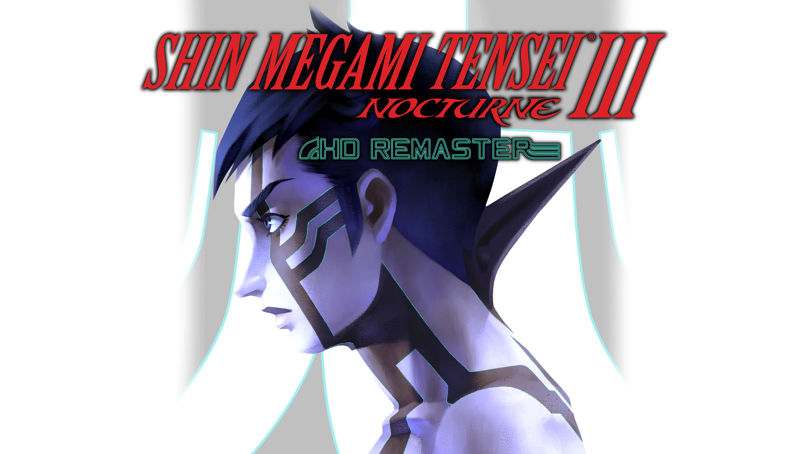

"Ya lo termine y me gusto. ¿Ahora que?"
Esta es una frase que he escuchado a muchos amigos mios decir desde el año pasado cuando pusieron Persona 5 Royal en Xbox/PC Gamepass y espero que con otros pase otra vez lo mismo ahora con Persona 3 Reload.
La Saga es inmensa y tiene un poco para cada quien. En esta seccion me gustaria orientarte sobre como llenar esa sed que te dejo el juego si las 60 horas minimo de contenido que te da este juego se te hicieron pocas.
Si te gusto el lado "social escolar"
Este es el caso mas sencillo. Persona 3 fue la primera entrega de la saga en usar el sistema de calendario que la caracteriza hoy en dia y la distingue de las toneladas de otros spin offs que tiene Shin Megami Tensei (abreviado SMT de ahora en adelante)

Si te gusto el lado mas oscuro
Si entras en este caso, hay material de sobra. Por el mero hecho de que las "Sombras" y "Persona" sean demonios en el resto de la saga de SMT es prueba de ello. Eso si, voy a aprovechar para recomendar las primeras 2 entregas de esta rama ya que siento que encajan como un puente entre el estilo de SMT principal y lo que acabas de jugar.
Pueden sentirse un poco mas anticuados y pueden ser mas dificiles de conseguir, pero bueno como dicen el que busca encuentra
Nota: tecnicamente seria una segunda trilogia al estar P2 divido en 2 juegos (Innocent Sin -> Eternal Punishment) y hay mas cosas que se mantienen entre juegos comparado a P3 -> P4 -> P5

Si quieres un reto.
Si entras en esta categoria probablemente seas fan de Dark Souls, probablemente trataste de matar al reaper cuando era nivel 20 y jugando en Mercyless. Descuida que en la saga hay una entrega justo para ti.
SMT 3: Nocturne salio un poco antes que Persona 3 tambien en la PS2 y se volvio un exito de culto de su propia manera. En su momento se le veia como el standard de los JRPGs dificiles, almenos dentro de la sexta generacion.
Hace unos años salio una version remasterizada asi que es buena opcion.
Capaz lo reconozcas del meme de Featuring Dante from the "Devil May Cry" series
Lo mas nuevo de Atlus
Este sera un año MUY cargado para Atlus, la compañia dedicada a hacer Persona/SMT entre otras sagas como Etrian Odyssey. Hay dos en particular que probablemente te interesen. Shin Megami Tensei V ha confirmado una version nueva para todas las consolas actuales con una campaña extra aparte de la original dandole segun se ha escuchado el DOBLE DE CONTENIDO comparado a su version original exclusiva a Nintendo Switch.
El otro juego que te puede interesar de los que se vienen pronto es "Metaphor - ReFantazio". Este juego, aunque sea una nueva IP, ya tiene una reputacion de legendario dentro del fandom y esto es porque por mucho tiempo su existencia era pues una leyenda. Se conocia como "Project Re:Fantasy" y el diseño de un personaje (La elfa de pelo rojo que se ve en el trailer) pero hasta ahi. Para que se den una idea, fue revelado poco antes de Persona 5 o junto con el mismo. Fue hasta el año pasado que porfin salio mas informacion oficial de este junto a la mayoria de los nombres de la gente que se veria involucrada en el, incluyendose ahi Katsura Hashino como director al igual que en las version originales de Persona 3, 4 y 5.
Este tipo de cosas tan anticipadas hay que siempre tomarlas con pinzas, pero por lo poco que hemos visto yo decido confiar.